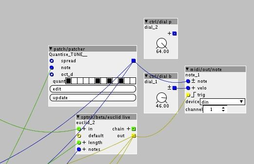

Hey, so I want to use my Axo as a sequencer. Sending midi to my hardware synth. Something I havent done or considered with axo yet. Is there a clear thread or can someone help me figure out the send midi/out? Where it goes in a patch. Much thanks and hope all is well.
Axo as Sequencer sending midi
Check out the midi/out/note object, that'll send the midi out. Just connect the gate and note outlets from the sequencer to the midi object. The outlets might be called something else, it kinda depends on the patch and how the sequencer is set up. If you have trouble post a screenshot of the patch and we should be able to work it out
Nosnibor
#3
If you use midi/out/note, don't forget to connect something to the velocity input. This is one of the few cases where the rule "an open input is always zero" leads to unexpected and less-than-useful results.
jaffasplaffa
#4
I have made an object called makenote, which handles the 3 data types for sending midi notes out of Axoloti, velocity, notelength and transpose.
With that object, it's very easy to set up and send midi note data to external devices.
So try searching for jaffa/makenote

SirSickSik
#5
As I often use several boards with a single "master" axoloti, I've made several midi objects that could come in handy. Just take a look in sss/midi
EarthTemple
#6
Thanks for the replies, but I just cannot find the connections.
so I'm using the axoloti midi output to my synth midi input.
I've tried linking the Note and Velocity to various objects like the picture has. Not sure if Im linking the wrong objects, or one of the Devices. What is the Device title to Axoloti 5pin Midi Out?
{kind=link}
It's currently sending to the usb host port (the big usb socket), the 5 pin normal midi socket is the 'din' device.
Screenshot looks ok, apart from envelope output to the velocity inlet is odd, I'd just use a dial if it's fixed velocity.
EarthTemple
#9
Thanks for the reply @MattilynMattroe
So I changed the device to Din (5pin) and tried a few dials on velocity, but no success. If this looks ok, I'll go over the axo to synth 5pin cable, but it all seems ok. (midi keyboard works).

MattilynMattroe
#10
Cool. A good way of testing stuff like this is to just hook up some control objects (dials/buttons) to the midi out objects and sending messages using those. Then, once you know it's working you can start hooking it up to the sequencer/whatever. And there's some good objects for monitoring what midi is coming in, too.
patatos
#11
Hi @EarthTemple try this simple patch to check midi output... cable axo midi output Simple midi out din.axp (1.5 KB)
etc. remember velocity is always positive your dial is +-... without posting the patch is difficult to resolve
EarthTemple
#12
Thanks @patatos for that! Seems I was on the right track, along with my new synth needing a channel switch. So I have it working now.